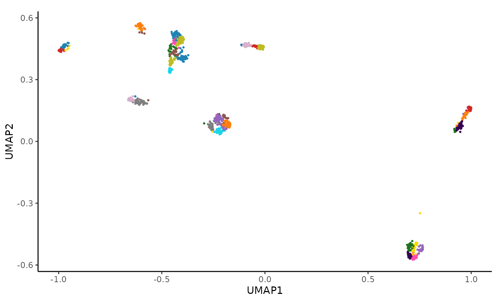

hc_plot_umap() creates a UMAP plot from an AnnData object, displaying points, cluster hulls, or both.
Usage
hc_plot_umap(AnnDatR, plot = c("points", "hulls", "both"))Examples
# Plot UMAP points from an AnnDatR object
adata_res <- hc_pca(example_adata, components = 40)
adata_res <- hc_distance(adata_res, components = 20)
adata_res <- hc_snn(adata_res, neighbors = 15)
#> Building SNN based on a provided distance matrix
#> Computing SNN
adata_res <- hc_cluster_consensus(adata_res, resolution = 6.3)
#> Iteration: 0 *** value: 970.898
#> Iteration: 1 *** value: 281.717
#> Iteration: 2 *** value: 100.383
#> Iteration: 3 *** value: 94.5865
#> Iteration: 4 *** value: 94.2944
#> Iteration: 5 *** value: 93.8117
#> Iteration: 6 *** value: 93.2751
#> Iteration: 7 *** value: 93.0317
#> Iteration: 8 *** value: 93.0109
#> Iteration: 9 *** value: 93.0109
#> Minimum: 93.0109
#> Joining with `by = join_by(cons_cluster)`
adata_res <- hc_umap(adata_res)
adata_res <- hc_cluster_hulls(adata_res)
hc_plot_umap(adata_res)
